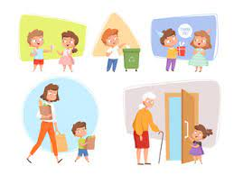
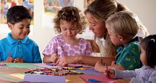

Learning about obedience is an essential component of development during childhood. Through this website, we explored obedience in a way that is understandable and relevant to young children.
Understanding obedience isn't just about blindly following rules; it's about learning to listen, respect, and cooperate with others. By following instructions from parents, teachers, and other caregivers, children can create safer environments for themselves and others, learn valuable skills, and build positive relationships.

Children will come across circumstances in their world when they must obey in order to ensure both their own and others' wellbeing. But it's equally critical that kids understand when it's OK to challenge authority figures and politely voice their opinions.
Children can learn the value of obedience through the activities and discussions on this website, which also helps them to improve their critical thinking abilities and sense of independence.
The ultimate purpose of instilling obedience in early children is to enable them to make thoughtful choices, behave appropriately, and favorably impact their communities. We can assist our children in developing into competent, compassionate, and self-assured adults by cultivating a culture of respect, cooperation, and understanding.
